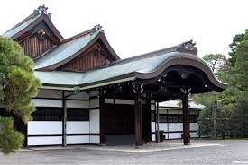
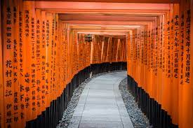
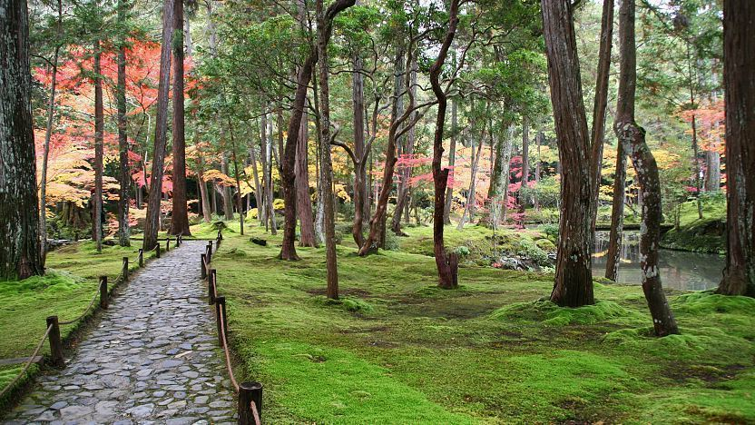
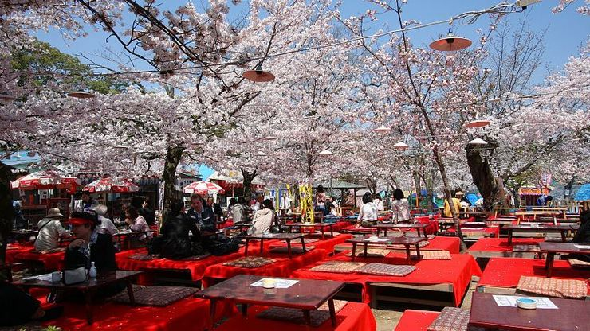

Kyoto (京都, Kyōto) served as Japan's capital and the emperor's residence from 794 until 1868.
It is one of the country's ten largest cities with a population of 1.5 million people and a modern face.
Over the centuries,
Kyoto was destroyed by many wars and fires, but due to its exceptional historic value,
the city was dropped from the list of target cities for the atomic bomb and escaped destruction during World War II.
Countless temples, shrines and other historically priceless structures survive in the city today.

1. Sento Imperial Palace (仙洞御所, Sentō Gosho) is a secondary palace complex across from the Kyoto Imperial Palace in Kyoto Imperial Park.
It was built in 1630 as the retirement palace of Emperor Gomizuno and became the palace for subsequent retired emperors.
The original palace buildings burned down in 1854 and were not rebuilt.
Instead, Omiya Palace was constructed on the Sento grounds in 1867 and now serves as the lodging place for the current prince and princess during their visits to Kyoto.

2. Fushimi Inari Shrine (伏見稲荷大社, Fushimi Inari Taisha) is an important Shinto shrine in southern Kyoto.
It is famous for its thousands of vermilion torii gates, which straddle a network of trails behind its main buildings.
The trails lead into the wooded forest of the sacred Mount Inari, which stands at 233 meters and belongs to the shrine grounds.
Fushimi Inari is the most important of several thousands of shrines dedicated to Inari, the Shinto god of rice.
Foxes are thought to be Inari's messengers, resulting in many fox statues across the shrine grounds. Fushimi Inari Shrine has ancient origins, predating the capital's move to Kyoto in 794.

3. Saihoji (西芳寺, Saihōji), more commonly known as Kokedera (苔寺),
is one of Kyoto's Unesco World Heritage Sites. Entrance to this temple requires a reservation made well in advance.
Kokedera means Moss Temple, referring to the temple garden's estimated 120 different varieties of moss.
Outside of winter, visitors to the temple can walk through this spectacular garden, which has strongly influenced subsequent Japanese garden design.
Kokedera was originally the site of Prince Shotoku's villa before becoming a temple in the Nara Period.
In 1339, the temple was renovated and converted into a Zen temple under the priest Muso Soseki. Muso is also credited with creating Kokedera's gardens.
4. Opened in 1897, the Kyoto National Museum (京都国立博物館, Kyōto Kokuritsu Hakubutsukan) is one of Japan's oldest museums and one of only
four top-level national museums alongside the Tokyo National Museum, Nara National Museum and Kyushu National Museum.
Currently all of the museum's exhibitions are held at the Heisei Chishinkan, a modern building opened in 2014 and designed by
Taniguchi Yoshio who is also known for the Horyuji Homotsukan at the Tokyo National Museum, the Mimoca Art Museum in Marugame and his redesign of the Museum of Modern Art in New York. The museum's Meiji Kotokan,
a beautiful redbrick building from the Meiji Period (1868-1912) is currently undergoing renovation works and is not open to the public.
Exhibitions from the museum's permanent collection are currently being held only during short periods of the year and display a wide variety of cultural properties,
including archaeological relics, sculptures, ceramics, calligraphy, costumes and paintings. During most of the rest of the year, the museum is used to stage special exhibitions on various themes.
In between exhibitions, only the museum garden is open to the public.

5. Maruyama Park (円山公園, Maruyama Kōen) is a public park next
to Yasaka Shrine in the Higashiyama District.
In the first half of April, when the cherry trees are in full bloom, the park becomes Kyoto's most popular
and most crowded spot for cherry blossom viewing parties (hanami).
The centerpiece of the park is a tall shidarezakura (weeping cherry tree), which gets lit up in the night.